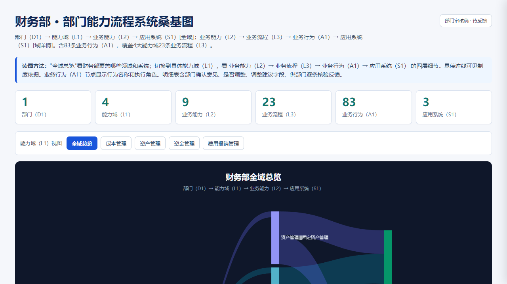
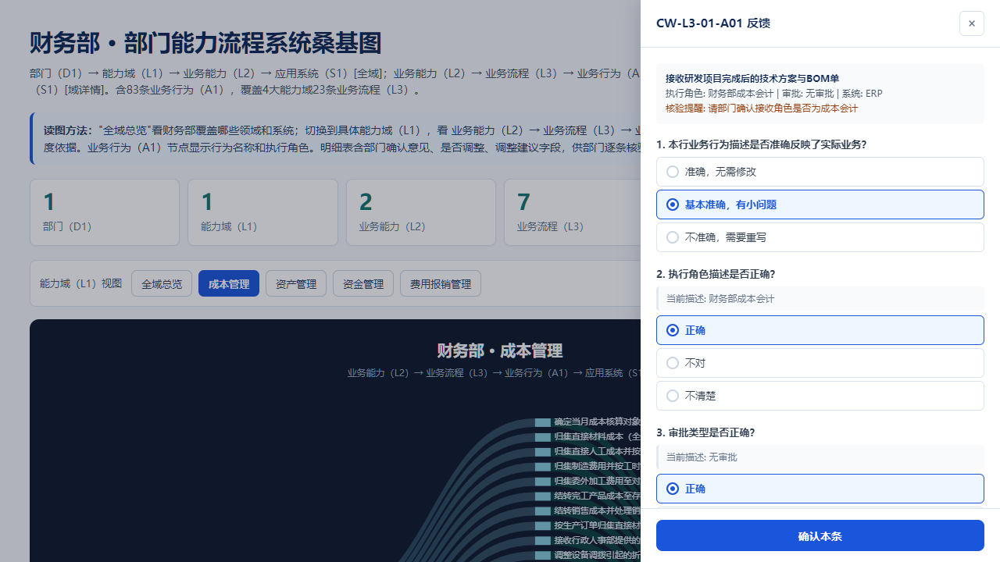
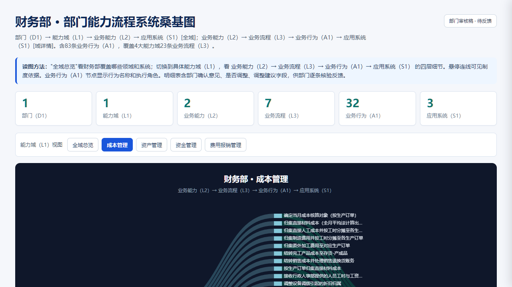

部门能力流程系统映射关系 · 在线反馈指南
本说明面向各部门业务人员，介绍如何在桑基图页面上逐条确认业务行为（A1）映射关系的准确性。全程只需点选选择题，仅在发现问题时补充文字说明。确认完成后一键导出 JSON 文件发回项目组。
浏览器打开链接或 HTML 文件
页面包含四个功能区域：顶部的反馈操作说明（6 步指引）、导出按钮和节点颜色图例、进度条（初始显示 0 / 139），以及下方的全域桑基图。

点击顶部模式按钮
页面顶部有一排能力域（L1）视图按钮：「全域总览」「成本管理」「资产管理」「资金管理」「费用报销管理」。点击具体域（如"成本管理"），桑基图切换为四层视图：
业务能力（L2）→ 业务流程（L3）→ 业务行为（A1） → 应用系统（S1）
其中 业务行为（A1）节点 是可点击的，每个节点显示行为名称和执行角色。
在桑基图中直接点击 A1 节点
点击桑基图中任意 A1 节点，页面右侧滑出反馈卡片。卡片顶部灰色区域显示该 A1 的基础信息（行为名称、执行角色、审批类型、涉及系统、核验提醒），下方依次排列 5 道选择题。
5 道选择题一览：
| 题号 | 问题 | 可选答案 |
|---|---|---|
| 1 | 本行业务行为描述是否准确？ | 准确，无需修改 / 有小问题 / 需重写 |
| 2 | 执行角色描述是否正确？ | 正确 / 不对 / 不清楚 |
| 3 | 审批类型是否正确？ | 正确 / 不对 / 不清楚 |
| 4 | 跨部门输入/输出关系是否正确？ | 正确 / 不对 / 不清楚 |
| 5 | 对核验提醒的反馈？（有提醒时才出现） | 同意细化 / 不同意 / 不适用 |
点选选项，有需要时填写备注
每道题点选一个选项，选中后高亮为蓝色。操作示例：
当选了"有小问题""不准确"或"不对"时，卡片底部自动出现"补充说明"输入框，可填写具体修改意见。

如果全部选"准确 / 正确 / 同意"，则无需写任何字，直接点确认即可。
点击蓝色按钮提交
填完后点击卡片底部的蓝色"确认本条"按钮。反馈卡片自动关闭，页面回到桑基图视图。
实时反馈，一目了然
提交反馈后两个变化同时发生：

可以随时再次点击已确认的节点修改反馈。已填数据保留在浏览器中，刷新页面会丢失。
一键下载，飞书发回
全部 A1 确认完成后（或随时），点击顶部"导出反馈 JSON"按钮，浏览器自动下载文件 物资保障部-反馈-2026-05-28.json。
导出文件格式如下：
{ "department": "物资保障部", "exported_at": "2026-05-28T08:12:39Z", "total": 139, "completed": 1, "feedback": [ { "a1_id": "0101-A01", "a1_name": "(请以实际页面显示为准)", "row_confirmed": "minor_issue", "role_confirmed": "correct", "approval_confirmed": "correct", "io_dept_confirmed": "correct", "verification_response": "agree", "notes": "(部门填写修改意见)" } ] }
将下载的 JSON 文件通过飞书或邮件发送给信息化项目组即完成反馈。